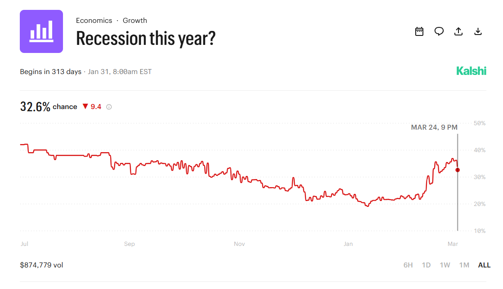
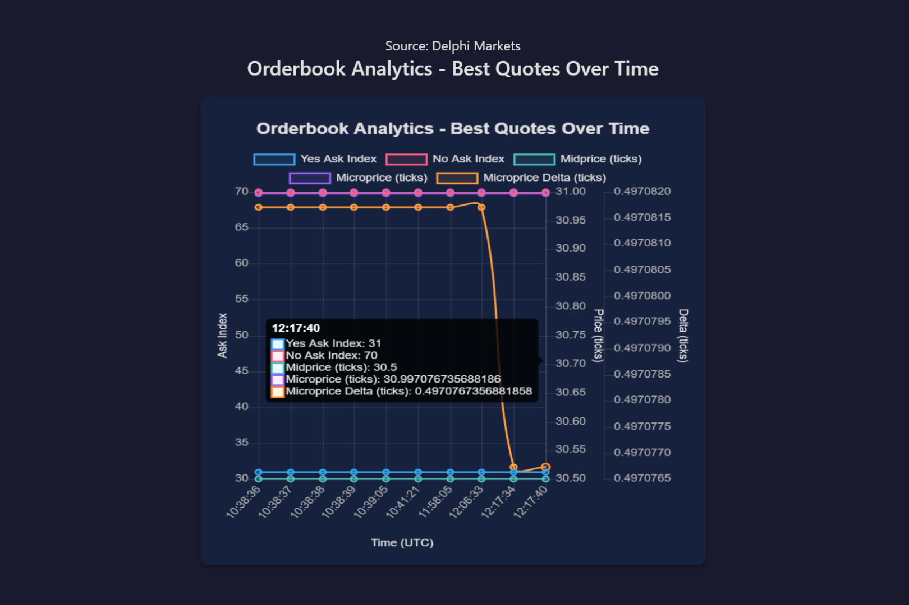

BS METER: 4/10 - Overstatement in NYT but not completely off.
Quick take on NYT's "A Week of Turmoil Leaves Stocks in Negative Territory for 2026"
NYT came out saying the stock market left the S&P 500 in negative territory for the year, job reports taking the index’s losses to 2% and that it’s one of the worst weeks so far this year.
It highlights a near 30% weekly spike in oil to over 92 dollars per barrel (the biggest jump since early‑Covid) and frames investor sentiment as increasingly worried about stagflation and policy missteps amid the Iran conflict. This may be nudging the U.S. toward a more serious downturn, with the path of Fed policy and the dollar “significantly” at stake.
Reuters also say the S&P has logged a fourth straight weekly loss and hit a six‑month low as the Iran war enters week four, stressing that the conflict could “persist longer than previously anticipated,” keep oil elevated, and is feeding fears the Fed may hike rather than cut by end‑2026.\
\
Debunking the NYT
Let’s debunk this. TLDR: The market isn’t aggressively pricing towards a recession like news channels are fearing. According to Kalshi’s market as of 3/14/206, there is a 32.6% probability of a 2026 recession, and Delphi market shows a persistent microprice above the midpoint (~30.99 vs 30.5) which means that the market is leaning towards “Yes” recession but with no full conviction. Even at peak Iran oil turmoil, best Yes and No quotes sit flat, and the microprice is stable, so traders aren’t suddenly panicking into or out of recession risk.


In addition, Polymarket puts “negative U.S. GDP in 2026” at only 17%, so traders expect slower growth but not a full-on contraction. Traders on Kalshi are almost sure the Fed will keep rates unchanged at the March meeting, and they expect the first cut to come later in 2026, not a series of surprise rate hikes. The crowd is betting on a slowdown plus gradual easing, not a 2026 crash plus stagflation plus Fed policy disaster.
My thoughts:
3 months. realistically. I suspect the war will hold up for a few months, the Strait of Hormuz might open by then, while oil prices will still be high before any changes happen. But, if it is still raging 6 months from now, I’d suspect traders will re-price recession odds higher. \
\
Earlier today, I called my dad regarding how Trump stated there will be negotiations, Iran rejected negotiations being made, and on top of that, Trump said he has received a “very significant gift” from Iran. My dad’s read is that, politics aside, both sides are probably starting to tire of the fighting and will eventually look for a way out (i.e. a deal). And I agree from a realistic standpoint. If Dephi Markets show that the midpoint moves from 30.5 to 40 or 50, then I’d suspect markets will start taking a potential crash more seriously.
I also suspect the Strait will not resume to normal until the war is over. Which also means I think Polymarket’s “Strait of Hormuz traffic returns to normal by the end of April?” could be priced even lower than their current 39%. However, I wouldn’t expect oil prices to come down immediately. Overall, the NYT narrative is not completely off, but the news is definitely overstating it and are much more fearful of a recession than the markets. On the BS METER, New York Times? I give you a 4/10.
\
Til next time,
Viviana Chen